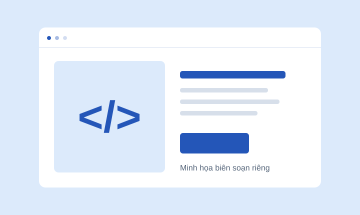
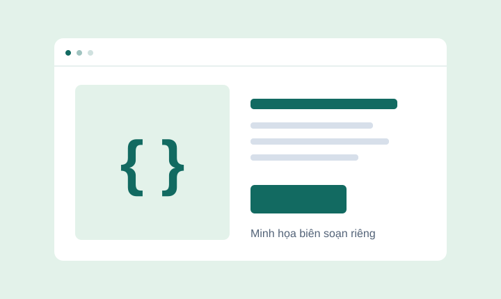
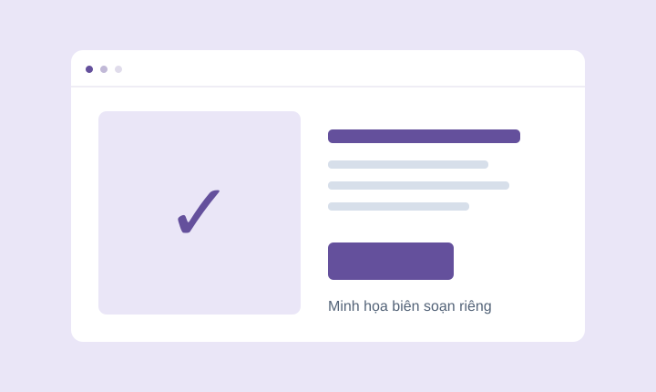

Web Dev for Beginners
Hiểu các phần của một trang web trước khi nhờ AI viết và sửa mã.
Repo, skill và mẫu dự án được giải thích bằng tiếng Việt. Biết dùng để làm gì, cần chuẩn bị gì và bắt đầu từ đâu.
Bài thực hành đầu tiên
với Codex trên Windows
Đọc phần giới thiệu, hoặc mở thẳng repo khi bạn đã biết mình cần gì.

Hiểu các phần của một trang web trước khi nhờ AI viết và sửa mã.

Xem các ví dụ nhỏ để hiểu cấu trúc, bố cục và cách trình duyệt hiển thị.

Một nguồn tham khảo để rà soát giao diện theo các quy tắc web.
Một repo nhiều sao chưa chắc dễ dùng. Chúng tôi giúp bạn xem công dụng, điều kiện và nguồn trước khi quyết định.
Link dẫn tới đúng repo hoặc thư mục skill của tác giả.
Các repo trong bản mẫu mới được đối chiếu nguồn, chưa cài hay thử bằng Codex.
Hình bìa là minh họa tự tạo. Không hiển thị sao GitHub hay chi phí chưa được xác minh.